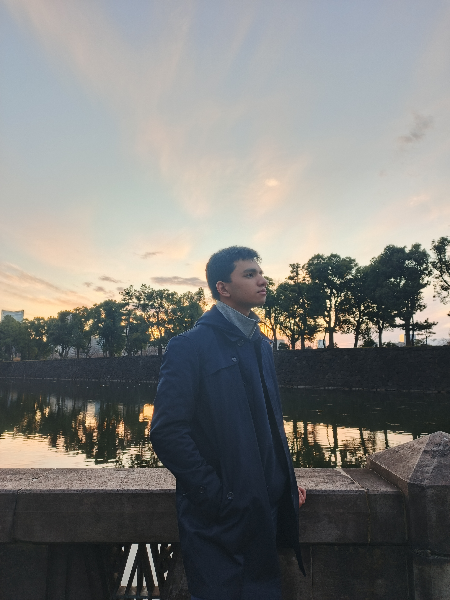

Aaron John C. Galario
I am a Vibe Programmer
Hello!
This personal developer portfolio project was created for the intention to share information and knowledge about me. As you explore this website, you'll discover
my journey, skills, and passion for technology. For me to tell you about my skills, this personal
portfolio will have projects that I contributed and built in my time as a
student, participant, hobbyist, and etc. Although, some of these projects focus
mainly in developing websites or UI/UX creativity, this shall explain my knowledge as an asset
for development companies. As part of my character, I am disciplined, competent, active,
and always eager to learn and work together for the benefit of improvement.
Technology isn't just a tool; it's the language of our future.
About the Vibe Programmer

I am Aaron John C. Galario, a 21 year-old, graduated from St. Alphonsus Catholic School (Lapu-Lapu City, Cebu) Inc.
and completed elementary and secondary levels. I graduated as a STEM graduate in their program and enrolled in the
University of San Carlos to be an Information Technology Graduate and to immerse myself to the world that be dependent
on technology and digital advancement. As a programmer, I aim to advocate the purpose of my academics and use my skills
from Information Technology in today's time. Throughout my experience, it has been a rollercoaster of innovation, creativity,
work, focus, fun, and practice to understand and challenge myself to adapt on how and what the world will become with its technology.
Projects
In this portion, we'll explore various projects I was involved with. With the help of Artificial Intelligence
(AI) and digital media platforms, I am able to showcase with ease and efficiency.
LakBai
Car Rental and Transportation Service Website
Click to expand
CebuGuide
Smart Tourism App for Cebu City, Philippines
Click to expand
G-Blog Portfolio
A personal blog and portfolio project
Click to expand
UI / UX GD
A simple digital media project contest held by an organization in the University of San Carlos - Talamban, GDGoC
Click to expand
Cosmic Restoration
An exploratory digital media project
Click to expand
Other Hobby Projects
Various experiments and side projects
Click to expand
Contact
My contact details:
GitHub: AJGalario
Phone: 09567322720 (Globe) / 09932685450 (DITO)
Email: 24100050@usc.edu.ph / galario.aaronjohn@gmail.com
Facebook Messenger: Aaron John Galario
Instagram: AJ Galario